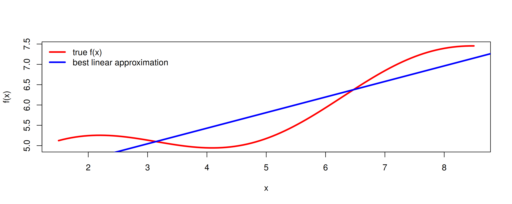
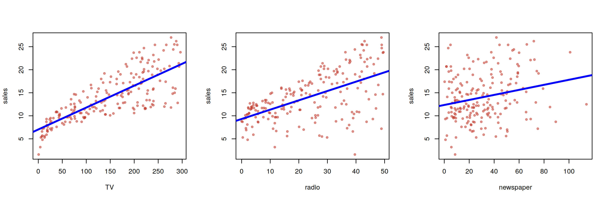
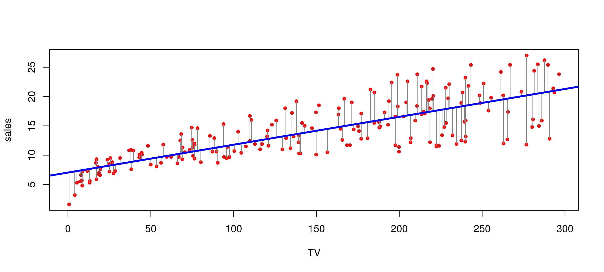
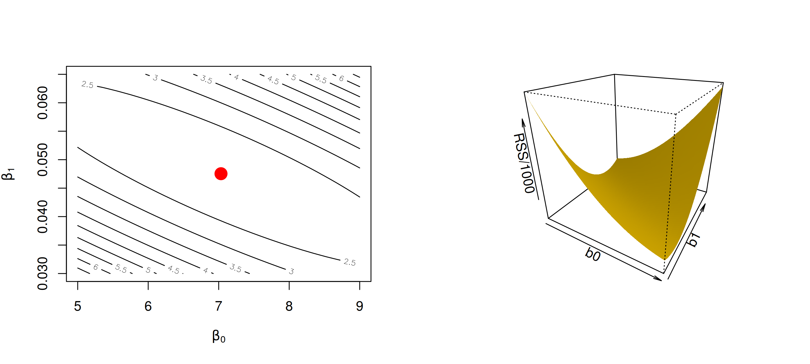
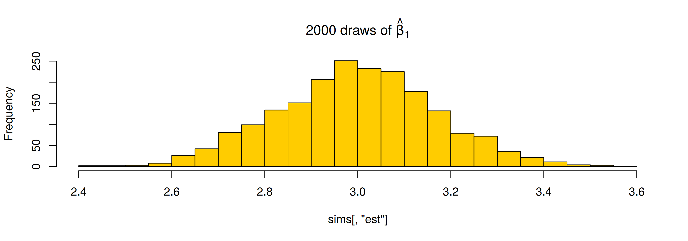
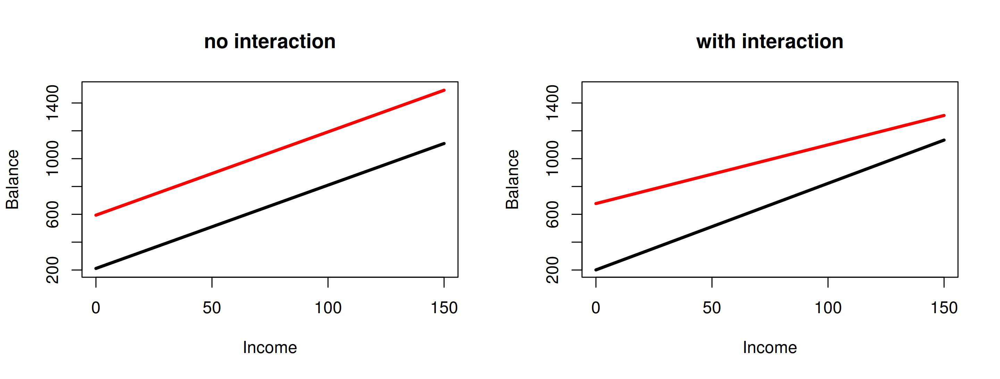
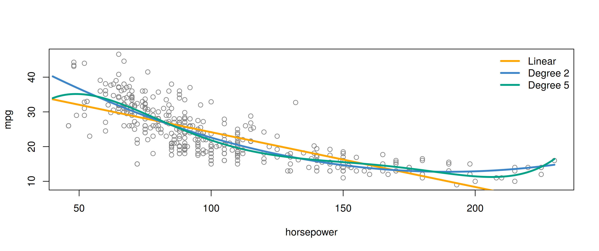
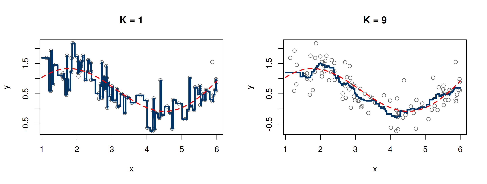
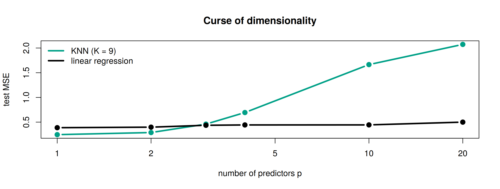

set.seed(4750)
f <- function(x) 4 + 0.35 * x + 0.6 * sin(x)
x <- seq(1.5, 8.5, length = 100)
plot(x, f(x), type = "l", lwd = 3, col = "red", ylab = "f(x)")
abline(lm(f(x) ~ x), lwd = 3, col = "blue")
legend("topleft", c("true f(x)", "best linear approximation"), col = c("red", "blue"), lwd = 3, bty = "n")Linear Regression 📈
MATH 4750 / MSSC 5750 Computational Statistics
Dr. Mehdi Maadooliat
Marquette University
MATH 4750 - Spring 2027
Linear Regression
The linear regression model and least squares
Accuracy of coefficients and of the model
Qualitative predictors and interactions
Potential problems
Linear regression vs. KNN regression
Linear Regression
- A simple approach to supervised learning: assume the dependence of \(Y\) on \(X_1,\dots,X_p\) is linear.
- True regression functions are never exactly linear!

- Although it may seem overly simplistic, linear regression is extremely useful both conceptually and practically.
Advertising Data

Is there a relationship between budget and sales? How strong? Which media contribute? How accurately can we predict future sales? Is it linear? Is there synergy?
Simple Linear Regression
\[ Y = \beta_0 + \beta_1 X + \epsilon \]
- \(\beta_0, \beta_1\): unknown intercept and slope (coefficients, parameters); \(\epsilon\): error term.
- Given estimates, predict with \(\hat y = \hat\beta_0 + \hat\beta_1 x\).
Least squares. With residuals \(e_i = y_i - \hat y_i\), minimize \(\text{RSS} = e_1^2 + \dots + e_n^2\):
\[ \hat\beta_1 = \frac{\sum_{i=1}^n (x_i-\bar x)(y_i-\bar y)}{\sum_{i=1}^n (x_i-\bar x)^2},\qquad \hat\beta_0 = \bar y - \hat\beta_1\bar x. \]
Least Squares Fit for sales onto TV

A linear fit captures the essence of the relationship, although it is somewhat deficient in the left of the plot.
The RSS Surface
rss <- function(b0, b1) sum((y - b0 - b1 * x)^2)
b0g <- seq(5, 9, length = 60); b1g <- seq(0.03, 0.065, length = 60)
z <- outer(b0g, b1g, Vectorize(rss))
par(mfrow = c(1, 2))
contour(b0g, b1g, z / 1000, nlevels = 15, xlab = expression(beta[0]), ylab = expression(beta[1]))
points(b0, b1, pch = 19, col = "red", cex = 2)
persp(b0g, b1g, z / 1000, theta = 30, phi = 25, col = "#FFCC00", border = NA, shade = 0.5,
xlab = "b0", ylab = "b1", zlab = "RSS/1000")
Accuracy of the Coefficient Estimates
\[ \mathrm{se}(\hat\beta_1)^2 = \frac{\sigma^2}{\sum_{i=1}^n(x_i-\bar x)^2},\qquad \mathrm{se}(\hat\beta_0)^2 = \sigma^2\left[\frac1n + \frac{\bar x^2}{\sum_{i=1}^n (x_i-\bar x)^2}\right],\qquad \sigma^2 = \mathrm{Var}(\epsilon). \]
- An approximate 95% confidence interval: \(\hat\beta_1 \pm 2\cdot\mathrm{se}(\hat\beta_1)\).
What does “95% confidence” mean? Let’s simulate repeated samples from a known model.
Simulating the Sampling Distribution of \(\hat\beta_1\)
set.seed(4750)
beta0 <- 2; beta1 <- 3; sigma <- 2; xs <- runif(100, -2, 2) # fixed design
sims <- t(replicate(2000, {
ys <- beta0 + beta1 * xs + rnorm(100, sd = sigma)
ft <- summary(lm(ys ~ xs))$coefficients
c(est = ft[2, 1], se = ft[2, 2])
}))
c(sd_of_estimates = sd(sims[, "est"]), theory = sigma / sqrt(sum((xs - mean(xs))^2)))sd_of_estimates theory
0.1709 0.1691 [1] 0.95
Hypothesis Testing and the \(t\) Statistic
\[ H_0: \beta_1 = 0 \quad\text{(no relationship)}\qquad\text{vs}\qquad H_A: \beta_1\neq 0 \]
\[ t = \frac{\hat\beta_1 - 0}{\mathrm{se}(\hat\beta_1)} \sim t_{n-2}\ \text{under } H_0 \]
Assessing the Overall Accuracy of the Model
- Residual standard error: \(\text{RSE} = \sqrt{\text{RSS}/(n-2)}\)
- \(R^2\) \(= \dfrac{\text{TSS}-\text{RSS}}{\text{TSS}} = 1 - \dfrac{\text{RSS}}{\text{TSS}}\), \(\quad \text{TSS} = \sum(y_i-\bar y)^2\)
- In simple regression, \(R^2 = r^2 = \mathrm{Corr}(X,Y)^2\)
Multiple Linear Regression
The Model and Its Matrix Form
\[ Y = \beta_0 + \beta_1X_1 + \cdots + \beta_pX_p + \epsilon, \qquad \mathbf{y}= \mathbf{X}\boldsymbol \beta+ \boldsymbol \epsilon \]
\[ \hat\boldsymbol \beta= \mathop{\mathrm{arg\,min}}_{\boldsymbol \beta}\|\mathbf{y}- \mathbf{X}\boldsymbol \beta\|^2 = (\mathbf{X}^\text{T}\mathbf{X})^{-1}\mathbf{X}^\text{T}\mathbf{y} \]
- Interpret \(\beta_j\) as the average effect on \(Y\) of a one-unit increase in \(X_j\), holding all other predictors fixed.
bhat_qr
2.938889 2.938889
TV 0.045765 0.045765
radio 0.188530 0.188530
newspaper -0.001037 -0.001037Results for the Advertising Data
Estimate Std. Error t value Pr(>|t|)
(Intercept) 2.938889 0.311908 9.4223 1.267e-17
TV 0.045765 0.001395 32.8086 1.510e-81
radio 0.188530 0.008611 21.8935 1.505e-54
newspaper -0.001037 0.005871 -0.1767 8.599e-01 TV radio newspaper sales
TV 1.000 0.055 0.057 0.782
radio 0.055 1.000 0.354 0.576
newspaper 0.057 0.354 1.000 0.228
sales 0.782 0.576 0.228 1.000newspaper is significant on its own but not in the multiple regression. Why? Look at the correlation between radio and newspaper.
Is At Least One Predictor Useful? The \(F\) Test
\[ H_0:\beta_1 = \cdots = \beta_p = 0,\qquad F = \frac{(\text{TSS}-\text{RSS})/p}{\text{RSS}/(n-p-1)}\sim F_{p,\,n-p-1} \]
Analysis of Variance Table
Model 1: sales ~ 1
Model 2: sales ~ TV + radio + newspaper
Res.Df RSS Df Sum of Sq F Pr(>F)
1 199 5417
2 196 557 3 4860 570 <2e-16 ***
---
Signif. codes: 0 '***' 0.001 '**' 0.01 '*' 0.05 '.' 0.1 ' ' 1- Deciding on important variables: all subsets (\(2^p\) models!), forward, backward selection; use \(C_p\), AIC, BIC, adjusted \(R^2\), or cross-validation (Ch 8).
Prediction: Confidence vs. Prediction Intervals
fit lwr upr
1 11.26 10.99 11.53 fit lwr upr
1 11.26 7.93 14.58- Confidence interval: uncertainty about \(f(X) = \mathrm{E}[Y\mid X]\) (reducible error).
- Prediction interval: also includes the irreducible error \(\epsilon\), so it is always wider.
Other Considerations
Qualitative Predictors
'data.frame': 400 obs. of 5 variables:
$ Balance: num 333 903 580 964 331 ...
$ Income : num 14.9 106 104.6 148.9 55.9 ...
$ Student: Factor w/ 2 levels "No","Yes": 1 2 1 1 1 1 1 1 1 2 ...
$ Region : Factor w/ 3 levels "East","South",..: 2 3 3 3 2 2 1 3 2 1 ...
$ Own : Factor w/ 2 levels "No","Yes": 1 2 1 2 1 1 2 1 2 2 ... Estimate Std. Error t value Pr(>|t|)
(Intercept) 509.80 33.13 15.3889 2.909e-42
OwnYes 19.73 46.05 0.4285 6.685e-01- A factor with \(k\) levels enters through \(k-1\) dummy variables; the baseline is absorbed into the intercept.
Interactions: Advertising Data
\[ \texttt{sales} = \beta_0+\beta_1\texttt{TV}+\beta_2\texttt{radio}+\beta_3(\texttt{radio}\times\texttt{TV}) + \epsilon = \beta_0 + (\beta_1+\beta_3\,\texttt{radio})\texttt{TV} + \beta_2\texttt{radio} + \epsilon \]
Estimate Std. Error t value Pr(>|t|)
(Intercept) 6.750220 2.479e-01 27.233 1.541e-68
TV 0.019101 1.504e-03 12.699 2.364e-27
radio 0.028860 8.905e-03 3.241 1.400e-03
TV:radio 0.001086 5.242e-05 20.727 2.758e-51 R2_additive R2_interaction
0.8972 0.9678 - The interaction explains \((96.8-89.7)/(100-89.7)\approx 69\%\) of the variability left after the additive model.
- A \(\$1{,}000\) increase in TV is associated with \((\hat\beta_1 + \hat\beta_3\times\texttt{radio})\times 1000\) more units sold.
The Hierarchy Principle
If we include an interaction in a model, we should also include the main effects, even if the \(p\)-values associated with their coefficients are not significant.
- Interactions are hard to interpret in a model without main effects; their meaning changes.
- The interaction terms also contain main effects if the model has no main-effect terms.
Qualitative \(\times\) Quantitative Interactions: Credit Data
f_add <- lm(Balance ~ Income + Student, data = Credit)
f_int <- lm(Balance ~ Income * Student, data = Credit)
par(mfrow = c(1, 2)); inc <- 0:150
for (f in list(f_add, f_int)) {
plot(NA, xlim = c(0, 150), ylim = c(200, 1500), xlab = "Income", ylab = "Balance",
main = if (identical(f, f_add)) "no interaction" else "with interaction")
lines(inc, predict(f, data.frame(Income = inc, Student = "Yes")), col = "red", lwd = 3)
lines(inc, predict(f, data.frame(Income = inc, Student = "No")), lwd = 3)
}
Non-linear Effects: Polynomial Regression on Auto
plot(mpg ~ horsepower, data = Auto, col = "gray50", pch = 1)
hp <- seq(40, 230, length = 200)
cols <- c("orange", "#3D85C6", "#00A087")
for (k in seq_along(c(1, 2, 5))) {
d <- c(1, 2, 5)[k]
lines(hp, predict(lm(mpg ~ poly(horsepower, d), data = Auto), data.frame(horsepower = hp)), lwd = 3, col = cols[k])
}
legend("topright", c("Linear", "Degree 2", "Degree 5"), col = cols, lwd = 3, bty = "n") Estimate Std. Error t value Pr(>|t|)
(Intercept) 56.900100 1.8004268 31.60 1.741e-109
horsepower -0.466190 0.0311246 -14.98 2.289e-40
I(horsepower^2) 0.001231 0.0001221 10.08 2.196e-21
Potential Problems
Six Things That Can Go Wrong
- Non-linearity of the response-predictor relationship
- Correlation of error terms
- Non-constant variance of errors
- Outliers
- High-leverage points
- Collinearity
Collinearity and the Variance Inflation Factor
\[ \text{VIF}(\hat\beta_j) = \frac{1}{1-R^2_{X_j\mid X_{-j}}} \]
Age Limit Rating
1.01 160.59 160.67 Limit and Rating are almost perfectly correlated: their coefficients become unstable. This motivates ridge regression (next lecture).
Linear vs. KNN Regression
KNN Regression
- To predict at \(x_0\), average the responses of the \(K\) closest training points: \(\hat f(x_0) = \dfrac1K\sum_{x_i\in\mathcal N_0} y_i\).
- Small \(K\): very flexible (low bias, high variance). Large \(K\): smooth (high bias, low variance).
KNN Fits for \(K = 1\) and \(K = 9\)
set.seed(4750); n <- 100
xtr <- runif(n, 1, 6); ytr <- sin(xtr) + 0.2 * xtr + rnorm(n, sd = 0.4)
grid <- seq(1, 6, length = 400)
par(mfrow = c(1, 2))
for (k in c(1, 9)) {
plot(xtr, ytr, pch = 1, col = "gray40", main = paste("K =", k), xlab = "x", ylab = "y")
lines(grid, knn_reg(xtr, ytr, grid, k), col = "#003366", lwd = 3, type = "s")
lines(grid, sin(grid) + 0.2 * grid, col = "red", lwd = 2, lty = 2)
}
Linear Regression vs. KNN as the Dimension Grows
set.seed(4750)
sim_mse <- function(p, k, n = 100, ntest = 500) {
Xtr <- matrix(runif(n * p, -1, 1), n); Xte <- matrix(runif(ntest * p, -1, 1), ntest)
ftrue <- function(X) 2 * X[, 1] + sin(3 * X[, 1]) # only X1 matters
ytr <- ftrue(Xtr) + rnorm(n, sd = .5); yte <- ftrue(Xte) + rnorm(ntest, sd = .5)
c(knn = mean((yte - knn_reg(Xtr, ytr, Xte, k))^2),
lm = mean((yte - cbind(1, Xte) %*% coef(lm(ytr ~ Xtr)))^2))
}
res <- sapply(c(1, 2, 3, 4, 10, 20), function(p) sim_mse(p, k = 9))
matplot(c(1, 2, 3, 4, 10, 20), t(res), type = "b", pch = 19, lwd = 3, col = c("#00A087", "black"), lty = 1,
log = "x", xlab = "number of predictors p", ylab = "test MSE", main = "Curse of dimensionality")
legend("topleft", c("KNN (K = 9)", "linear regression"), col = c("#00A087", "black"), lwd = 3, bty = "n")
KNN suffers from the curse of dimensionality: in high dimensions, the \(K\) nearest neighbors are far away.
Summary
- Least squares = projection: \(\hat\boldsymbol \beta= (\mathbf{X}^\text{T}\mathbf{X})^{-1}\mathbf{X}^\text{T}\mathbf{y}\) (computed via QR).
- SEs, CIs, \(t\) and \(F\) tests describe sampling variability, which we can also see by simulation.
- Dummy variables, interactions (hierarchy!), polynomial terms extend the linear model.
- Diagnose: non-linearity, heteroscedasticity, outliers, leverage, collinearity (VIF).
- Parametric (linear) vs. nonparametric (KNN): bias-variance and the curse of dimensionality.
Interactive app: Regression Shiny app